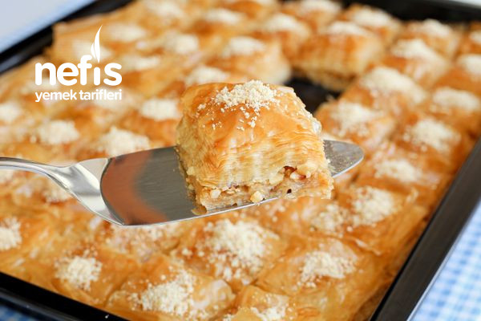

6-8 Kişilik
15 dk Hazırlık, 30 dk Pişirme Süresi
Malzemeler
- 44 adet baklavalık yufka
- 2 su bardağı iri çekilmiş fındık
- 350 gr tereyağı
Serbeti için:
- 3 su bardağı toz şeker
- 1 su bardağı su
- 3 subardağı süt
Sütlü Nuriye, Türk mutfağından bir tatlı. İhtilal tatlısı veya ihtilal baklavası da denir. Süt, fındık, şeker ve un ile yapılır.
Tarif:Elif Atalar
Serbeti için:
İlk olarak tatlımızın şerbetini hazırlayalım. Bunun için uygun bir tencereye su ve şekeri alarak 5 dakika kadar kaynatalım.
Daha sonra sütü ilave edelim, karıştıralım ve ocaktan alalım.
Tepsimizin tabanını tereyağı ile yağlayalım.
Baklavalık yufkayı tepsimize yerleştirelim ve üzerine tereyağından sürelim. Bu şekilde aralarına tereyağı sürerek yaklaşık 22 adet yufkayı üst üste sıralayım.
Yufkaların üzerine fındıkların tamamını serpelim ve kalan baklava yufkalarımızı da aynı şekilde aralarına tereyağı sürerek üst üste sıralayalım.
Tüm yufkaları tepsiye yerleştirdikten sonra kalan tereyağını tatlının üzerine gezdirelim. Tatlımızın daha düzgün görünmesi için kenarlarından fazla gelen yufkaları keselim.
Tatlımızı kareler halinde dilimleyelim.
Ardından tatlımızı önceden 180 ͒C’ye ısıtılmış fırında kızarana kadar yaklaşık 30 dakika pişirelim.
Fırından alınan tatlının ilk sıcağı çıktıktan sonra soğumuş olan şerbeti tatlının üzerine gezdirelim.
Sütlü nuriye tatlımız şerbetini tamamen çektikten sonra üzerini dilediğimiz şekilde süsleyelim ve servise hazır.
Afiyet olsun.